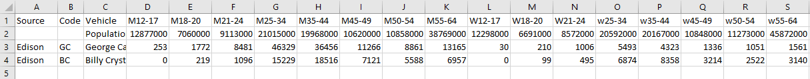
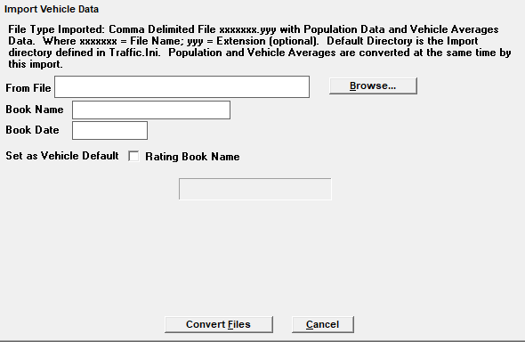
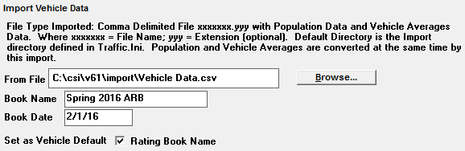
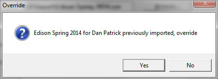
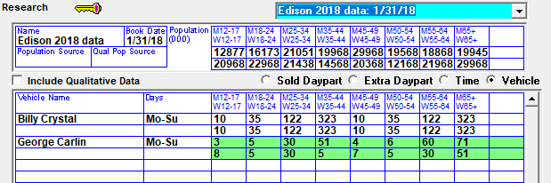

Vehicle Research Import
Counterpoint is able to import research data by vehicle, from multiple sources, via a CSV file. This is the research import to use to import Edison research data.
On version 7.0 and earlier versions, the vehicle research import can be used to import research data for eight basic demo categories: 12-17, 18-24, 25-34, 35-44, 45-49, 50-54, 55-64, and 65+. On version 7.1 and above, it can also be used to import research data from nine basic demo categories: 12-17, 18-20, 21-24, 25-34, 35-44, 45-49, 50-54, 55-64, and 65+ (the difference is whether there is an 18-24 category, or whether it's separated into two categories 18-20 and 21-24).
File Structure
There are three types of records that are imported: Header, Population, and Demo. The records must be in this order, and the CSV file must follow the strict format detailed below:

Header Record
This record defines the column location of the various fields and must be in this order.
- The first column contains the word "Source"
- The second column contains the word "Code"
- The Third column contains the word "Vehicle"
- The following columns contain the Demo names.
- The maximum amount of demographics is 28
- The demo names can be in any order
- No spaces are allowed within each demo name
Population Record
This record defines the population for each of the demographics. The remaining columns contain the demographic population values.
- The first two columns are blank, other than a necessary comma
- The third column contains the word Population
- The remaining rows contain the population values for the corresponding demographic categories from the header record
Demo Record
This record defines the Book Source, the Vehicle and the demographic audience values.
- The first column contains the Source of the research data, this is optional and is used to form the book name (see Book Name Rules below)
- The second column contains the Vehicle Station Code value, which is used to find the vehicle in the Traffic system to associate with the research data
- Maximum of 5 characters
- The third column contains the Vehicle Name (this is a reference field only and is not used)
- The following columns contain the audience values for the corresponding demographic categories from the header record
Book Name Rules
The Research Book name used by the system can be manually entered on the import screen, imported from the Source field on the import file, or be created by the system merging the entered and imported names. The system adheres to the following rules when determining Book names:
- If a Book Name is manually entered during the import process, and there is a Source name defined in the import, the two names will be merged to form the complete Book Name
- For example, if the manually entered book name is “Sept 14” and the Source name is “Edison”, the research book name will be “Sept 14 Edison”
- If the Source field value is not defined in the import file, then the Book name entered during the import process will be the Research Book name
- For example, if the manually entered book name is “Sept 14” and the source field is blank on the records on the import file, the Research Book name will be “Sept 14”
- If the entered Book Name is not defined during the Import process, then the Source name defined in the Import file will be the Research Book name
- For example, no manually entered book name was entered, but the Source name on the import file is “Edison”, so the Research Book name will be “Edison”
- If the Entered Book name and the Source name are both not defined, then an error message will be displayed that reads "Book name must be defined on the import screen or in the source column on the audience data records"
Running the Import
Double click the Import Research shortcut, enter your Counterpoint credentials, and select Vehicle, or select the import screen from Task -> Import -> Research -> Vehicle dropdown.
Once selected, the following screen appears:

Click Browse to access the location of the import file. Select the file to import and click OK.
Enter the Book Name, the Book Date, and decide whether this will be the default book to use with this vehicle.

Click Convert Files to start the Import process.
Research Changes and Updates
Research can be altered or entered manually in the Research screen. The Research document will walk you through these steps.
If there is a new vehicle, create a new import file with only the new vehicle. On the Import Screen, enter the same book name and date; the existing research book will be updated with the new vehicle research data. If the file has any previously imported vehicles defined, you will receive an override message:

Special Demographics
If you do not have a value for 65+ in your import file, and you have another “+demo” such as 55+, the system will calculate all of your “+demos” by adding the applicable standard demos, and place the results in the Demo box in the bottom left hand corner of the Research screen. If you do not have any “+” demographics defined in your import file, the system will not calculate any “+ demo” values.
Data Verification
There are three ways you can verify the research file import.
View Message log
Select Accessories->Messages and click “Import – Vehicle”.
You can view, email or print the error messages.
Research Screen
You can view the research in the Research screen by selecting the appropriate book.

Research Report
You can run the Research report for data verification.